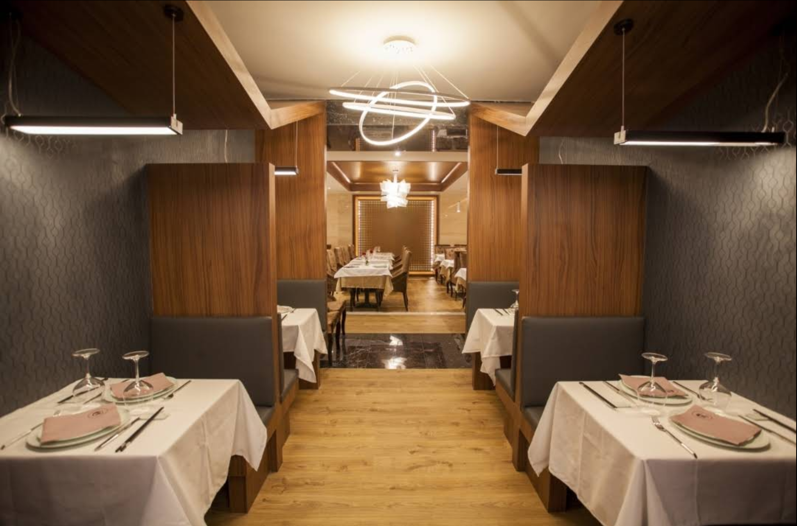

GASTRONOMÍA CHINA CONTEMPORÁNEA
Tang Chu no es solo un restaurante, es un viaje sensorial. Hemos rescatado las recetas imperiales de la China profunda y las hemos reinterpretado con técnicas modernas y una presentación exquisita. Una fusión elegante que respeta la raíz, pero mira hacia el futuro.

Más allá de nuestra carta, ofrecemos una experiencia reservada para los verdaderos conocedores.
La Auténtica Cocina China: Una selección de platos exclusivos diseñados por nuestro Chef, elaborados con ingredientes de temporada y técnicas ancestrales que requieren tiempos de cocción pausados.
*Disponibles exclusivamente bajo reserva previa. Pregunte por las sugerencias de temporada.
Consulta SugerenciasEl ambiente en Tang Chu acompaña la excelencia del plato. Diseñado para la intimidad y la celebración.
La amplitud perfecta para reuniones corporativas, celebraciones familiares y grandes grupos. Un ambiente diáfano donde la elegancia es la protagonista.
Para quienes buscan la máxima discreción. Un espacio exclusivo, separado del bullicio, ideal para cerrar negocios o disfrutar de una velada íntima.